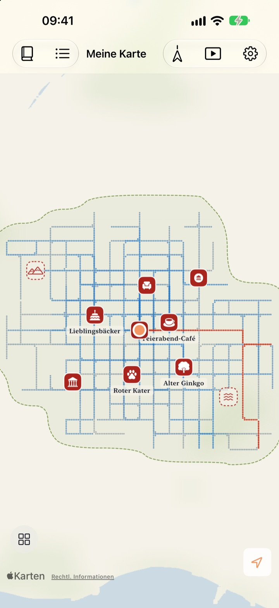
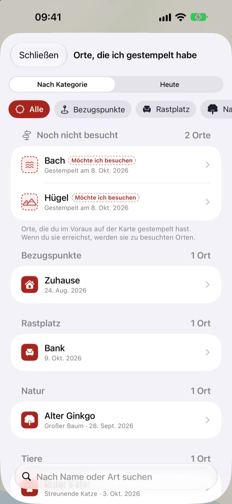
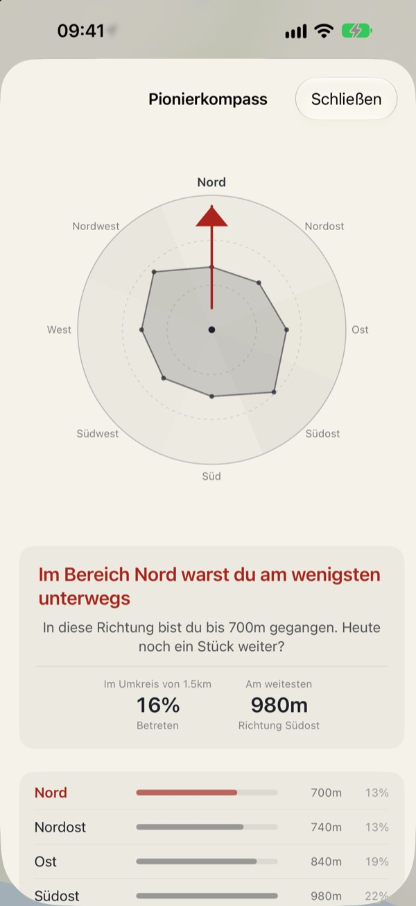
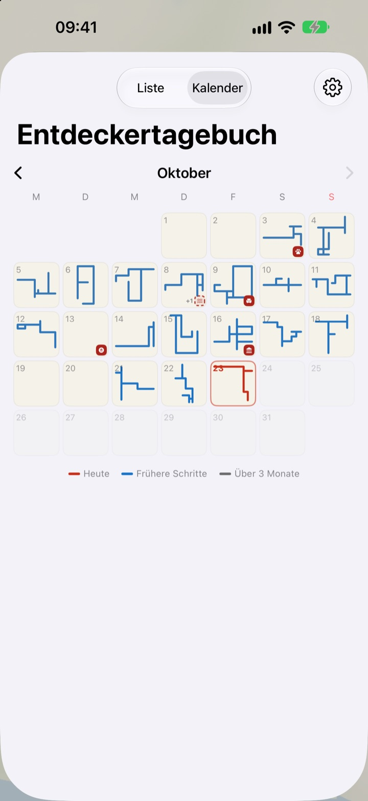

Eine Karte, die sich
nur zu Fuß füllt
Sie beginnt als leeres Blatt Papier. Nur wo du gehst, füllt sie sich Punkt für Punkt, und wer hundertmal dieselbe Straße läuft, macht sie kein Stück größer. Damit die Karte wächst, brauchst du neue Wege.
Alle Funktionen sind kostenlos, ohne Werbung.

Geh eine Runde
Zieh mit dem Finger oder der Maus über das Papier, um zu gehen. Die blauen Punkte sind Straßen, die du schon gegangen bist. Sieh dir an, wie sich „Heute gezogene Wege“ verändert, wenn du sie noch einmal gehst oder Neuland betrittst.
Jeden Tag dieselben Straßen?
Ein Schrittzähler zählt Schritte, fragt aber nie, wohin sie geführt haben. Von zu Hause zum Bahnhof und zurück, und der Ring ist voll, während die Seitenstraße nebenan jahrelang ein Rätsel bleibt. Buktu Buktu zählt nur Wege, die du zum ersten Mal gehst. Ein guter Grund, heute einen Block Umweg zu machen.
Stempel für Orte, an denen du warst und die du sehen willst
Stempel die Stelle, an der du stehst, oder halte die Karte an einem beliebigen Punkt gedrückt. 212 Stempel stehen zur Auswahl, nach Kategorien sortiert.
Ein Stempel dort, wo du noch nie gegangen bist, bleibt ein Ort zum Besuchen und wird zum besuchten Ort, sobald du wirklich dort bist. Fotografiere ein Ladenschild, und der Hintergrund wird entfernt. Das Schild steht dann als Sticker an genau dieser Stelle.

Nächster Spaziergang: dorthin, wo du am wenigsten warst
Der Pionierkompass teilt deine Umgebung in acht Richtungen und zeigt auf die, die du am wenigsten erkundet hast.
Heutige Fußspuren listet die Orte, an denen du heute angehalten hast, der Reihe nach auf, dazu die Strecke dazwischen.

Jeder Tag hinterlässt eine Form
Der Kalender zeigt statt einer Zahl die Form des Weges, den du an diesem Tag gegangen bist. Führe ein Tagebuch mit Text und Fotos und sieh, wie viel von jedem Spaziergang Neuland war.
Wähle einen Zeitraum und sieh als Video zu, wie deine Karte entsteht. Das Video kannst du exportieren.

In drei Schritten loslegen
- 1
App öffnen
Ein leeres Blatt Papier faltet sich auf.
- 2
Standort erlauben
Wähle „Immer“ und schalte „Bewegung & Fitness“ ein, damit Spaziergänge auch ohne geöffnete App aufgezeichnet werden.
- 3
Losgehen
Je unbekannter die Straße, desto mehr wächst die Karte.
So liest du die Karte
- Rote Punkte
- wo du heute gegangen bist
- Indigoblaue Punkte
- frühere Schritte, dunkler, wo du am häufigsten vorbeikommst
- Graue Punkte
- Orte, an denen du seit über drei Monaten nicht mehr warst. Sie verblassen, verschwinden aber nie
- Gestrichelter Stempel
- ein Ort aus „Möchte ich besuchen“. Er wird zum besuchten Ort, sobald du dort bist
- Meine gezeichneten Wege
- Gesamtlänge aller Wege, die du zum ersten Mal gegangen bist
- Heute gezogene Wege
- wie viel vom heutigen Spaziergang neu war
- Alles im Überblick
- in den Einstellungen; öffnet Pionierkompass, Heutige Fußspuren und den Film deiner Karte
Du kannst zwischen der Tuschekarte und der Bildkarte wählen.
Alle Funktionen sind kostenlos
Kostenlos
- Eine Karte, die sich nur zu Fuß füllt, mit Erfassung neuer Wege
- 212 Stempel und Sticker aus Ladenschildern
- Pionierkompass und Heutige Fußspuren
- Kalender und Tagebuch mit Text und Fotos
- Video deiner entstehenden Karte exportieren
- Widgets für Home-Bildschirm und Sperrbildschirm
- iCloud-Synchronisierung zwischen Geräten
Den Entwickler unterstützen
- Wenn du magst, gib in den Einstellungen ein kleines Trinkgeld
- Trinkgeld schaltet nichts frei. Die App bleibt genau dieselbe
Keine Werbung, kein Abo.
Fragen
Ich bin gegangen, aber auf der Karte ist nichts zu sehen.
Öffne Einstellungen > Buktu Buktu > Standort, wähle „Immer“ und schalte „Bewegung & Fitness“ ein. Dann wird auch bei geschlossener App aufgezeichnet. Hast du in den App-Einstellungen den akkuschonenden Aufzeichnungsmodus gewählt, öffne die App, bevor du losgehst. Ungenaue Standorte werden gespeichert, aber nicht gezeichnet.
Werden Fahrten mit Auto oder U-Bahn aufgezeichnet?
Nein. Anhand von Bewegungsdaten und Geschwindigkeit werden nur Gehen und Laufen gezeichnet, Abschnitte, die nach einem Fahrzeug aussehen, bleiben weg. Gelegentlich kann das danebenliegen.
Ich gehe jeden Tag dieselbe Strecke, und die Karte wächst nicht.
Das ist die Regel. Alles im Umkreis von 30 m um bereits Gegangenes zählt als derselbe Weg, deshalb wachsen „Meine gezeichneten Wege“ nur durch neue Wege. Auch der Gehweg auf der anderen Straßenseite zählt als derselbe Weg. Der Pionierkompass zeigt dir, wo du am wenigsten warst.
Wird mein Standort irgendwohin gesendet?
Nicht an den Entwickler. Schritte, Stempel, Tagebuch und Fotos bleiben auf deinem Gerät und in deiner privaten iCloud, der Entwickler kann sie nicht sehen. Die anonyme Nutzungsstatistik enthält nie Koordinaten, Tagebuchtexte, Ortsnamen oder Fotos. Um Koordinaten in Ortsnamen umzuwandeln, werden Dienste von Apple Karten genutzt. Mehr dazu in der Datenschutzerklärung unten.
Kommen meine Aufzeichnungen auf ein neues Gerät mit?
Ja. Melde dich auf dem neuen Gerät mit demselben Apple Account an und lass iCloud eingeschaltet, dann kommen Schritte, Stempel, Tagebuch und Fotos mit.
Wie lösche ich einen Stempel oder ein Foto?
Stempel löschst du in der Liste „Orte, die ich gestempelt habe“, Tagebuchfotos durch langes Drücken. Eine Möglichkeit, alle Wege und Tagebucheinträge auf einmal zu löschen, ist geplant.
Wie füge ich das Widget hinzu?
Halte den Finger auf dem Home-Bildschirm, tippe auf „Bearbeiten“ > „Widget hinzufügen“ und wähle Buktu Buktu. Für den Sperrbildschirm hältst du den Finger darauf und tippst auf „Anpassen“. Das Widget auf dem Home-Bildschirm zeigt Form und Länge des heutigen Weges, der Sperrbildschirm die heutige Strecke.
Was brauche ich?
Ein iPhone mit iOS 17.0 oder neuer.
Wie erreiche ich euch?
Schick uns Feedback aus den Einstellungen der App oder eine E-Mail an die Adresse unten. Wir antworten so schnell wie möglich.
Fragen oder Feedback? Schreib an leeo@kakao.com.